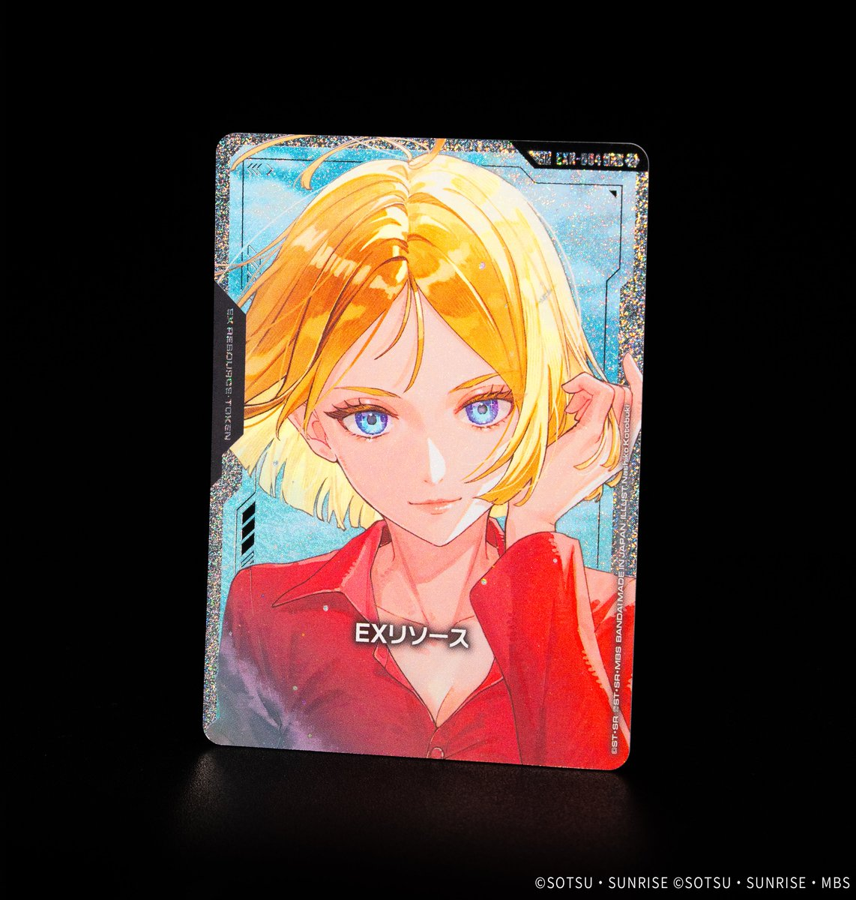

今回は3枚のカードを紹介します。「Eternal Nexus(エターナル ネクサス)」(EB01)からは白のUNIT「ギャプランTR-5［フライルー］1号機」(EB01-054)、ST07からは紫のPILOT「刹那・F・セイエイ」(ST07-009)、ST02からは緑のPILOT「ヒイロ・ユイ」(ST02-010)がラインナップされ、複数の色とカードタイプにまたがる構成となっています。

ギャプランTR-5［フライルー］1号機 (EB01-054)
| 色 | 白 | タイプ | UNIT |
| Lv | 3 | コスト | 2 |
| AP | 3 | HP | 3 |
| 特徴 | ジージェネ | ||
ギャプランTR-5［フライルー］1号機はCOST2でAP3/HP3を備えた効果なし(バニラ)のジージェネ特徴ユニットで、白系デッキの序盤要員として過不足のないステータス効率を持ちます。効果を持たない分、ガンダム・ルブリスやリック・ディアスといった《ブロッカー》持ちと数値面で役割が分かれ、こちらは能動的なアタック側として立ち回りやすい点が特徴です。

刹那・F・セイエイ (ST07-009)
| 色 | 紫 | タイプ | PILOT |
| Lv | 4 | コスト | 1 |
| 補正 AP | 2 | 補正 HP | 1 |
| 特徴 | CB | ||
効果: 【バースト】このカードを手札に加える。【アタック時】このターン中、このユニットをAP+1する。自分のトラッシュに〔CB〕のカードが7枚以上あるなら、かわりに〔CB〕の自分のユニットすべてをAP+1する。
刹那・F・セイエイ(ST07-009)は、COST1でAP2/HP1のパイロット。【アタック時】でこのユニットをAP+1でき、トラッシュにCBのカードが7枚以上あれば、かわりにCBの自分のユニットすべてをAP+1する全体強化に切り替わる。 CB特徴を軸に据えたトラッシュ肥やしが前提となる後半向けの効果で、序盤は単体のAP+1として堅実に運用できる点が扱いやすい。 【バースト】で手札に戻るため、シールドから捲れても再利用しやすいのも小さな利点だ。

ヒイロ・ユイ (ST02-010)
| 色 | 緑 | タイプ | PILOT |
| Lv | 4 | コスト | 1 |
| 補正 AP | 2 | 補正 HP | 1 |
| 特徴 | オペレーション・メテオ | ||
効果: 【バースト】このカードを手札に加える。【リンク中】このユニットをAP+1、HP+1する。
COST1でLv.4のパイロットとして扱えるヒイロ・ユイは、【バースト】でシールドから手札に戻せるため、被弾時にも無駄になりにくい構成です。【リンク中】にユニットをAP+1、HP+1する常駐強化を持ちますが、リンク先が指定されていない点は運用時に確認が必要です。AP2/HP1という搭載元の補強として、低コストで盤面を底上げできる一枚です。

関連カード
-
 溢れる慈愛(GD01-118)白系デッキ内採用率42.3% (1969デッキ)
溢れる慈愛(GD01-118)白系デッキ内採用率42.3% (1969デッキ) -
 ガンダム・ルブリス(GD01-086)白系デッキ内採用率38.9% (1811デッキ)
ガンダム・ルブリス(GD01-086)白系デッキ内採用率38.9% (1811デッキ) -
 エールストライクガンダム(ST04-001)白系デッキ内採用率36.6% (1701デッキ)
エールストライクガンダム(ST04-001)白系デッキ内採用率36.6% (1701デッキ) -
 キラ・ヤマト(ST04-010)白系デッキ内採用率36.3% (1688デッキ)
キラ・ヤマト(ST04-010)白系デッキ内採用率36.3% (1688デッキ) -
 リック・ディアス(GD02-079)白系デッキ内採用率31.3% (1458デッキ)
リック・ディアス(GD02-079)白系デッキ内採用率31.3% (1458デッキ) -
 0ガンダム(GD03-063)紫系デッキ内採用率9% (417デッキ)
0ガンダム(GD03-063)紫系デッキ内採用率9% (417デッキ) -
 GNアーマー TYPE-E(GD04-063)紫系デッキ内採用率1.7% (81デッキ)
GNアーマー TYPE-E(GD04-063)紫系デッキ内採用率1.7% (81デッキ) -
 ガンダムエクシア(ST07-001)紫系デッキ内採用率0.3% (12デッキ)
ガンダムエクシア(ST07-001)紫系デッキ内採用率0.3% (12デッキ) -
 ガンダムエクシア（トランザム）(GD03-049)紫系デッキ内採用率0.3% (12デッキ)
ガンダムエクシア（トランザム）(GD03-049)紫系デッキ内採用率0.3% (12デッキ) -
 ガンダムヴァーチェ(ST07-004)紫系デッキ内採用率0.2% (11デッキ)
ガンダムヴァーチェ(ST07-004)紫系デッキ内採用率0.2% (11デッキ)